Arcturus Labs
Building the future
of AI products
and workflows
Strategy, training, and hands-on engineering
for teams building with AI agents.
Just looking around?See what Arcturus Labs is building
- My Software FactoryHow I’m building my own software factory, mistakes and all.
- Will OpenAI Eat Jev’s Lunch?A fast new kind of model took off. What happens when the big labs notice?
- TypeSafe’s Jev Trades Text Generation for Instant, Calibrated DecisionsA model that answers questions with calibrated numbers almost instantly.
From possibility to product
Arcturus Labs can help
Product direction. AI behavior. Agentic engineering.

“The strategic assessment from Arcturus Labs was a turning point for our product. By implementing their 'participatory experience' model, we are empowering our users to guide the AI, leading to higher confidence and much better data outcomes.”
“Building a multi-agent therapist training simulator from scratch is a massive undertaking. Arcturus Labs provided the foundational architecture, a sophisticated strategy, and hands-on work that gave us the ability to train and refine our Patient, Coach, and Evaluator agents into a reliable, evidence-based training platform.”
“Arcturus Labs took a complex, email-driven process and turned it into a systematic, AI automated workflow. And the research agent cut through the noise of hospital shortages, and was able to identify substitutes in a fraction of the time it would take staff.”
“If you have the chance to bring him in for a training with your team then I would definitely recommend it and I know my colleagues would too.”

Talks, workshops, and conversations with John Berryman.
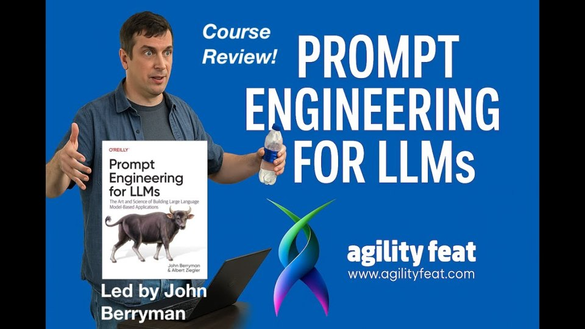
Prompt Engineering for LLMs course at AgilityFeatAgilityFeat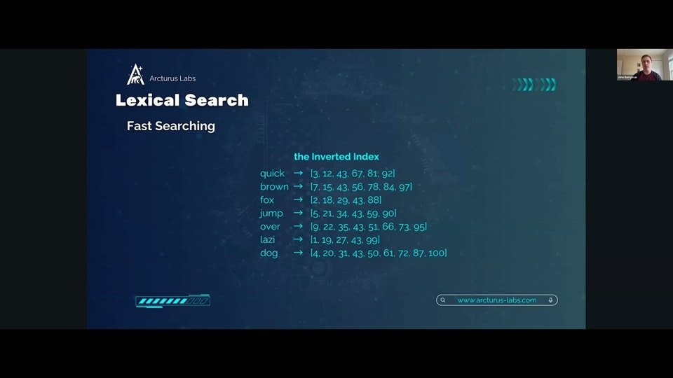
Lexical Love: Rediscovering the Power of Text in RAG [John Berryman]Jason Liu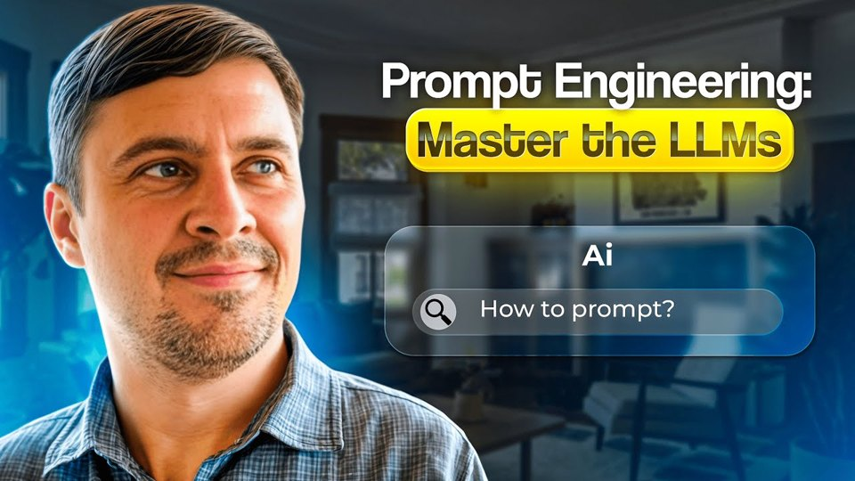
Prompt Engineering WorkshopHamel Husain A Builder’s Guide to Agentic Search & Retrieval with Doug Turnbull & John BerrymanVanishing Gradients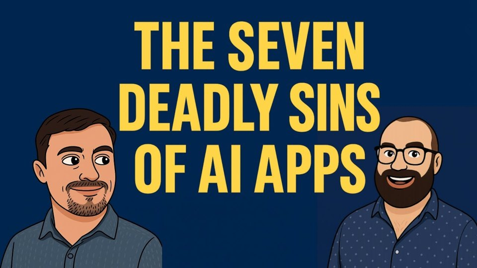
Patterns and Anti-Patterns For Building with AI (with John Berryman)Vanishing Gradients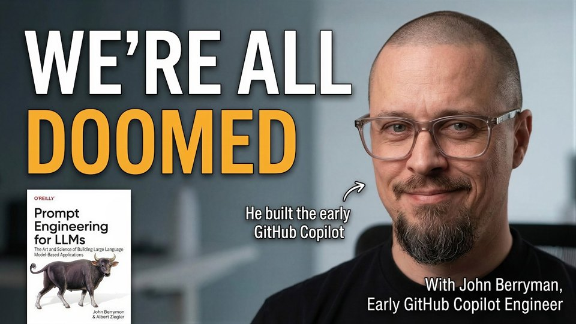
He Built AI for GitHub Copilot. Now He Says We're All Doomed | John Berryman, Github EngineerTwoSetAI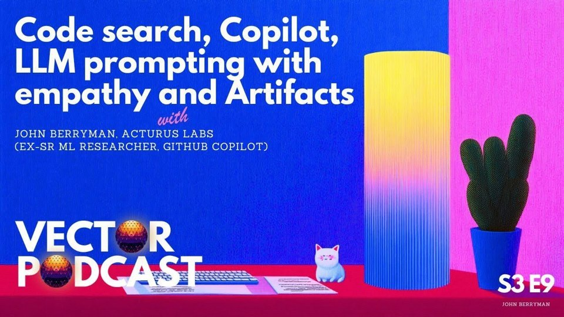
Code search, Copilot, LLM prompting with empathy and Artifacts - John Berryman, ex-GitHub CopilotVector Podcast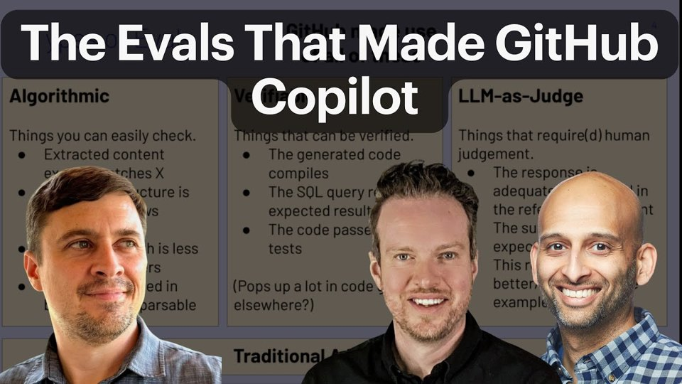
The Evals That Made GitHub CopilotHamel Husain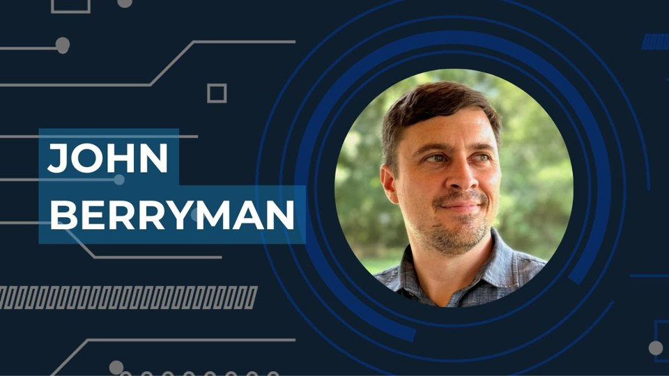
Prompt Engineering for LLMs: Best Practices With John Berryman of Arcturus LabsScaling Tech Podcast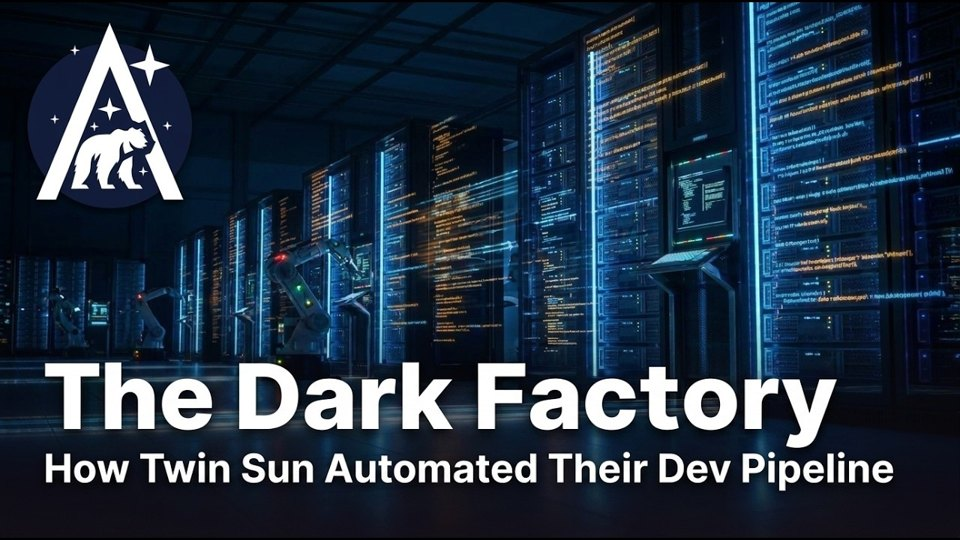
The Dark Factory: How Twin Sun Automated Their Entire Dev PipelineArcturus Labs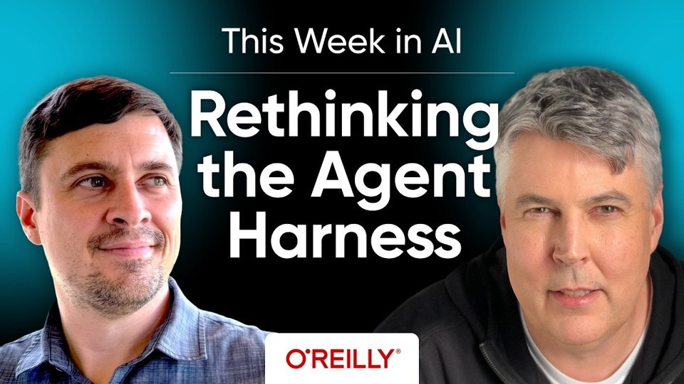
This Week in AI: Rethinking the Agent Harness with Eric Freeman and John BerrymanO'Reilly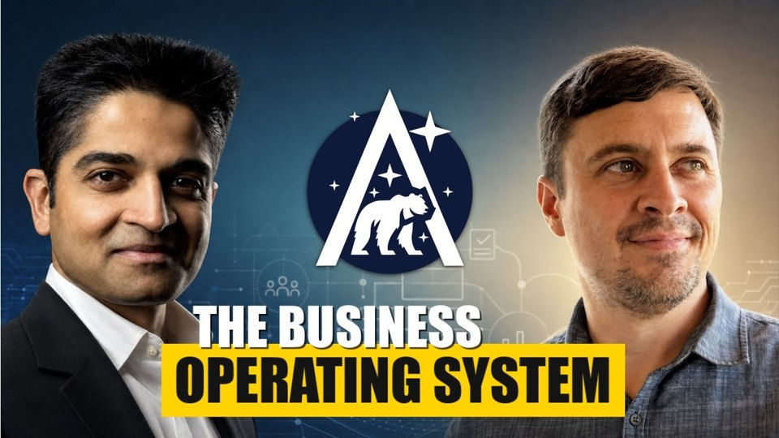
You Built It With AI. How Do You Deploy It? Operate ItArcturus Labs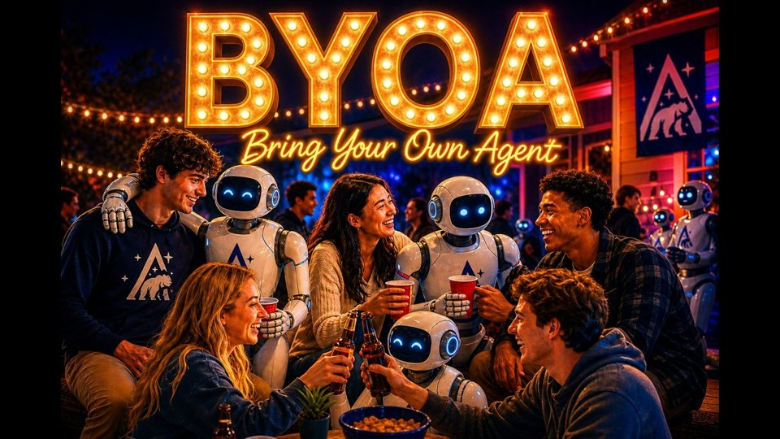
B.Y.O.A. – Bring Your Own AgentArcturus Labs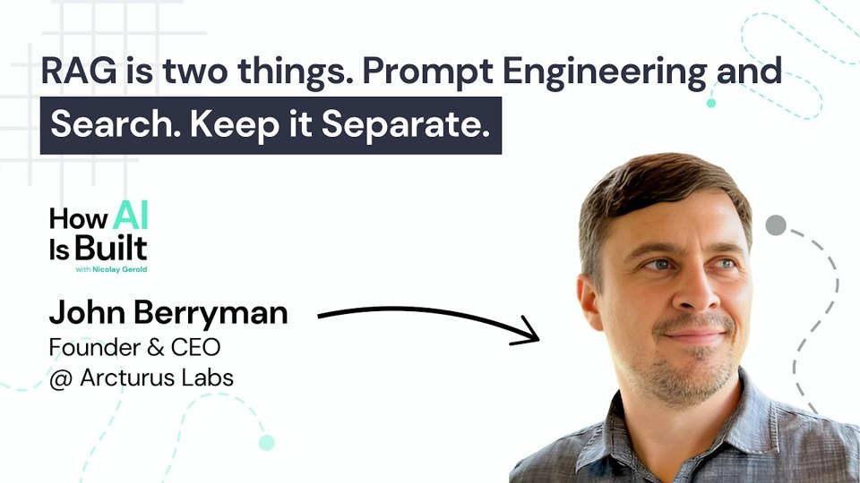
RAG is two things. Prompt Engineering and Search. Keep it Separate | S2 E28How AI Is Built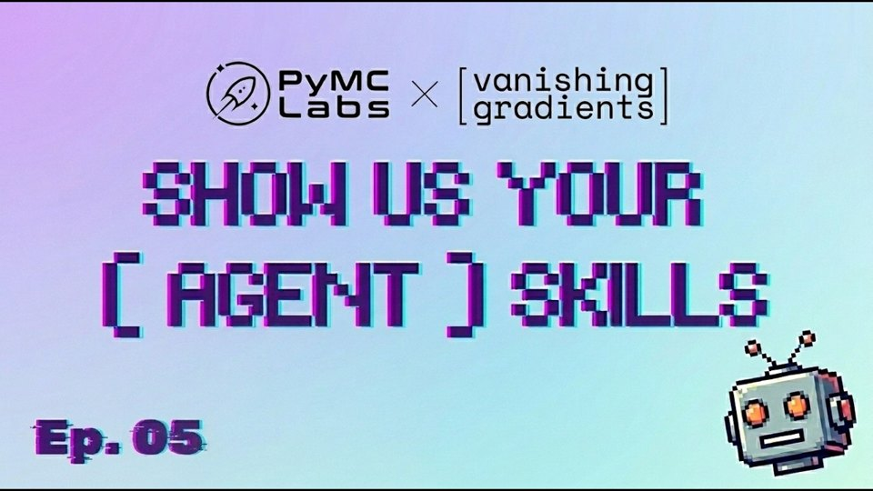
Show Us Your (Agent) Skills Episode 5 - w/ John Berryman, Isaac Flath, & Matt PalmerVanishing Gradients Zero to Agent in 30 Minutes: Build a Workflow Agent Without Code with John BerrymanO'Reilly